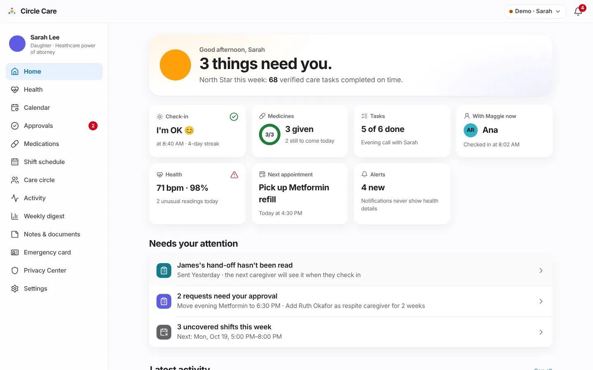
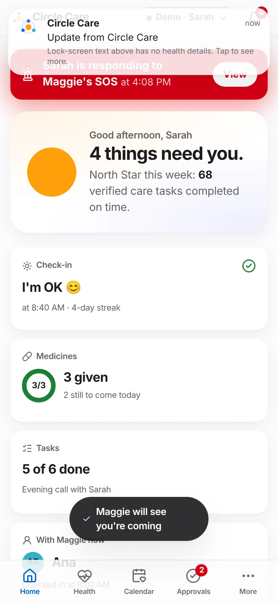
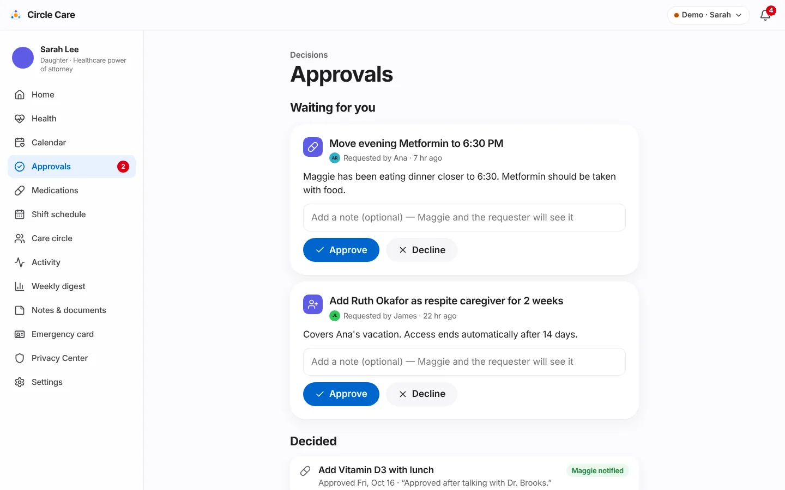
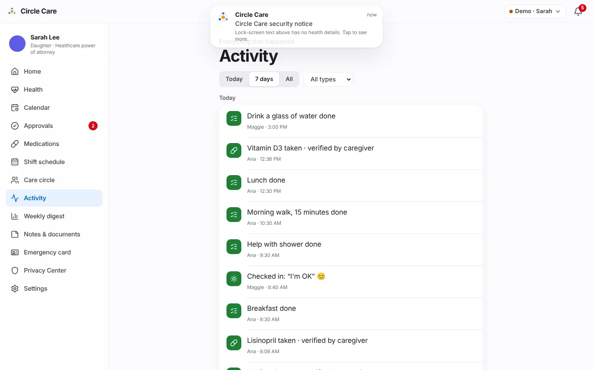
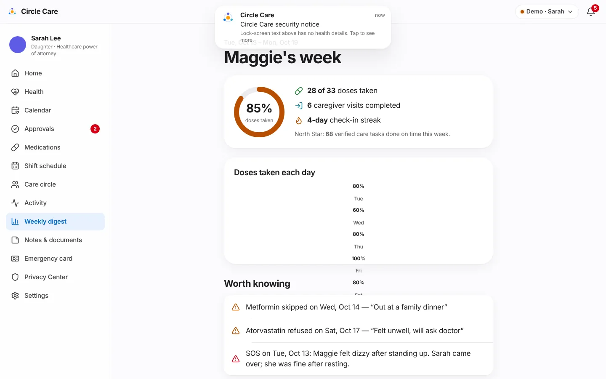
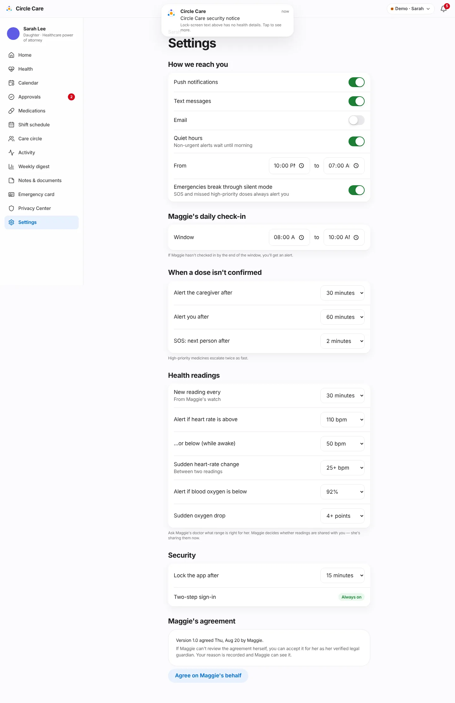

Guardian dashboard & approvals¶
Overview¶
What. The guardian's command centre. Home answers "Is Mom OK today?" in seconds and lists only the things that need Sarah. Approvals is where medicine changes, new members and shift swaps wait for her decision. Activity is the full history; the Weekly digest is the summary; Settings controls how and when she is alerted.
Why. "I find out about problems days later, from someone else." (guardian hypothesis, CC-4). Remote decision-makers need signal, not noise — and the elder must be able to see what was decided about her.
Business value. Reduces anxiety-driven calls and missed problems; makes the guardian's legal role concrete (approvals) while keeping the elder informed. The digest is the retention loop for family buyers.
User journey¶
Home — today at a glance (CC-61)¶
- Sarah opens Home: "Good afternoon, Sarah" and a headline that counts what needs her — "Maggie's day is on track.", "One thing needs you." or "3 things need you." — plus the North Star: "68 verified care tasks completed on time."
-
Seven tiles, each linking to detail:
Tile Shows Check-in I'm OK 😊 at 8:40 AM · 4-day streak, or Not yet / Missed with the window Medicines Ring 3/3, 3 given, 2 still to come today Tasks 5 of 6 done and the next two open tasks With Maggie now The checked-in caregiver and check-in time, or No one Health Latest heart rate · blood oxygen and N unusual readings today (only while Maggie shares readings) Next appointment Title and Today at 4:30 PM Alerts 4 new — Notifications never show health details -
Needs your attention lists, in priority order: an active SOS · late or overdue doses · a missed check-in · a caregiver who hasn't arrived · hand-offs nobody has read (last 3 days) · pending approvals · uncovered shifts this week.
- Latest activity shows the six most recent events with See all.


Approvals (CC-64, CC-65)¶
- Approvals has three parts: a Maggie has a question panel (if she asked one) with Call Maggie; Waiting for you; and Decided.
- Each pending request shows its type icon, title, requester and age ("Requested by Ana · 7 hr ago"), the reason, a note box ("Add a note (optional) — Maggie and the requester will see it"), Approve and Decline.
- Approve → "Approved — Maggie has been told". The change is applied immediately (medicine schedule, member activated, or shift reassigned).
- Decided lists past decisions with the date and note, and a badge Maggie notified or Maggie saw it once she taps OK, got it.

Activity (CC-62)¶
- Activity — "Everything that happened" — groups events by day with filters: Today / 7 days / All and a type menu (Medicines, Tasks, Visits, Hand-offs, Check-ins, Notes, SOS, Approvals).

Weekly digest (CC-83)¶
- Maggie's week shows the past 7 days: a ring with the percentage of doses taken (green at 90% or above, orange below), doses taken, caregiver visits completed, check-in streak and the North Star.
- Doses taken each day charts daily adherence; days below 90% are highlighted.
- Worth knowing lists every dose not taken (with the reason) and any SOS that week.
- The email Sarah receives previews the PHI-free email: "Maggie's weekly update is ready. This week: 85% of scheduled items completed, 6 visits, and a 4-day check-in streak. Open Circle Care to see the details." — "To protect Maggie's privacy, this email never includes medicine names, conditions or notes."

Settings¶
- Settings groups everything Sarah controls:

Functional details & business rules¶
Settings reference¶
| Section | Setting | Default | Options |
|---|---|---|---|
| How we reach you | Push notifications / Text messages / Email | On / On / Off | On, off |
| Quiet hours — "Non-urgent alerts wait until morning" | On, 22:00–07:00 | Any times | |
| Emergencies break through silent mode — "SOS and missed high-priority doses always alert you" | On | On, off | |
| Maggie's daily check-in | Window | 08:00–10:00 | Any times |
| When a dose isn't confirmed | Alert the caregiver after | 30 minutes | 15, 30, 45 |
| Alert you after | 60 minutes | 45, 60, 90, 120 | |
| SOS: next person after | 2 minutes | 1, 2, 3, 5 | |
| Health readings | See Health insights | ||
| Security | Lock the app after | 15 minutes | 1, 5, 15 |
| Two-step sign-in | Always on | — | |
| Maggie's agreement | Shows version, date and who agreed; Agree on Maggie's behalf (verified guardian only, reason ≥ 10 characters) |
Approval types¶
| Kind | Example (seed) | Requested by | On approve |
|---|---|---|---|
med-change |
Move evening Metformin to 6:30 PM | Ana (caregiver on shift) | Time 18:00 → 18:30; history entry "(requested by Ana)" |
member |
Add Ruth Okafor as respite caregiver for 2 weeks | James (family) | Ruth's status pending → active |
shift-swap |
Swap 08:00–14:00 shift to James | Caregiver or family | Shift reassigned |
Direct guardian edits also create an already-approved record so that Maggie sees them in Updates about me.
Attention list rules¶
| Item | Condition |
|---|---|
| SOS | Any SOS not resolved |
| Medicine not confirmed | Dose state late or escalated |
| Missed check-in | No check-in and the window has ended |
| Caregiver hasn't arrived | See late check-in rule (Shifts) |
| Hand-off not read | Not acknowledged, sent in the last 3 days |
| Requests need approval | Any pending approval |
| Uncovered shifts | Coverage gaps in the next 7 days |
Metrics shown¶
| Metric | Definition (src/data/selectors.ts) |
|---|---|
| North Star | Doses taken within 60 minutes of schedule + task completions, last 7 days (northStar) |
| Check-in streak | Consecutive days with a check-in, counting back from today (or yesterday if not yet today) |
| Daily adherence | Taken ÷ scheduled doses per day; today counts only doses already due (adherenceByDay) |
| Visits completed | Visits with a check-out in the last 7 days |
Permissions & privacy¶
| Resource | Read | Write / act |
|---|---|---|
approvals |
elder, guardian | approve: guardian · propose: family, pro@shift, pro |
history (activity) |
elder, guardian, family | — |
digest |
elder, guardian | — |
settings |
elder, guardian | guardian (elder only for her own display, lock, sharing and emergency-card fields) |
The elder sees every decision
Each decision sets elderSeen = false, which puts a New badge and a red dot on Maggie's Updates about me. She can ask a question about any decision.
Viewing Home, Approvals, Activity and the Digest each writes a "viewed …" entry to the access log (at most once every 10 minutes per screen).
Notifications¶
| Trigger | Recipient | Lock-screen text | In-app detail |
|---|---|---|---|
| New request | Guardian | You have a new request in Circle Care | Ana asked to move evening Metformin to 6:30 PM. |
| Request waiting > 24 hours (CC-64) | Guardian | You have a reminder from Circle Care | "title" has been waiting for your decision for over a day. |
| Request decided | Caregiver | You have an update in Circle Care | Sarah approved your request: title |
| Maggie asks a question | Guardian | You have a new message in Circle Care | Maggie has a question about "title": question |
Accessibility¶
- Tiles are links with visible text values, not colour-only status.
- The digest's daily chart has an
aria-labelsummarising every day (e.g. "Daily adherence: Tue 80%, Wed 60%…"). - Approval note field has an accessible label (Note).
/app/guardian,/app/guardian/approvals,/app/guardian/digestand/app/guardian/settingspass axe-core.
Data captured¶
| Entity | Fields |
|---|---|
Approval |
kind, title, detail, requestedBy, at, status, decidedAt, note, payload, elderSeen, elderQuestion |
Settings |
channels, quietHours, criticalBypass, checkinWindow, doseEscalation, escalationDelayMin, sessionLockMin, consent |
AuditEvent |
approved / declined entries with the request title |
Edge cases & error states¶
| Situation | Behaviour |
|---|---|
| Nothing pending | "Nothing to approve right now." |
| No activity for a filter | "Nothing here for these filters." |
| Guardian not verified | Agree on Maggie's behalf disabled — "Available once your legal authority is verified." |
| Health sharing off | Home hides the Health tile |
| Maggie paused sharing | Banner: "Maggie has paused sharing. You still have access as her legal guardian; other members only receive emergency alerts." |
| Request decided by James's approval | The decision alert is sent to the caregiver view (the demo has no family app) |
Test coverage¶
| Type | Test |
|---|---|
| E2E | Guardian sign-in with MFA (greeting) · Guardian approves request; elder sees decision · Weekly digest renders · CC-64 24-hour approval reminder · CC-22 guardian consents on the elder's behalf with a reason · Missed dose escalates… (Lisinopril not confirmed on Home) |
| Unit | rules.test.ts — reminds the guardian about requests older than a day (CC-64). policy.test.ts — approvals, history, digest, settings for every role |
Known limitations & production gaps¶
| In the prototype | In production (planned) |
|---|---|
| Channels and quiet hours are saved but not applied | Delivery service that honours channels, quiet hours and critical bypass |
| The digest is a page; no email is sent | Scheduled Sunday email (PHI-free) through a vendor with a BAA if needed; open/click tracking disabled |
| Decision notifications go to the caregiver view only | Notify the actual requester on their channel |
| One guardian per circle | Co-guardians and delegated helpers |
| No AI summaries | Weekly AI health summary — non-diagnostic (R3) |